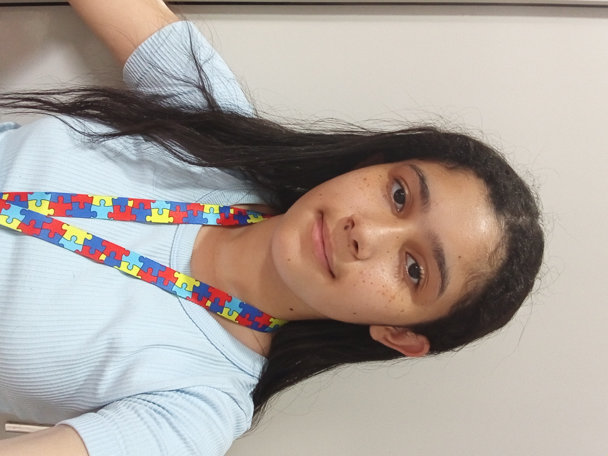

Júlia Maria Vieira da Silva
921C, Desenvolvimento de Sistemas

Data de nascimento: 17/05/2010
Gosto de escrever, cantar e ouvir músicas pop (principalmente se for uma música da Bea Duarte), além de ser apaixonada por gatos. Posso até ser inteligente e ter uma voz bonita, mas também sou desligada, sincera demais, pessimista, ansiosa, emotiva e com uma baixa autoestima (tanto que, se você reparar bem, eu coloquei mais defeitos do que qualidades minhas aqui).
Meus conhecimentos dentro do curso
Programação em JavaScript;
Hardware e Software;
Protocolo de Internet (IP);
Variáveis (Var);
Computação;
HTML;
Internet;
Diferença entre Internet e Web;
Servidor e cliente;
DNS (Domain Name System);
Algoritmo;
Segurança da informação.
Desenvolvimento de Sistemas é o processo de criação, manutenção e melhoria de softwares e soluções computacionais para automatizar tarefas e resolver problemas organizacionais. Envolve etapas como análise de requisitos, projeto, codificação, testes e implantação, focando em desenvolver ferramentas eficientes, seja em aplicativos, sites ou sistemas de gestão.
Site do meu curso